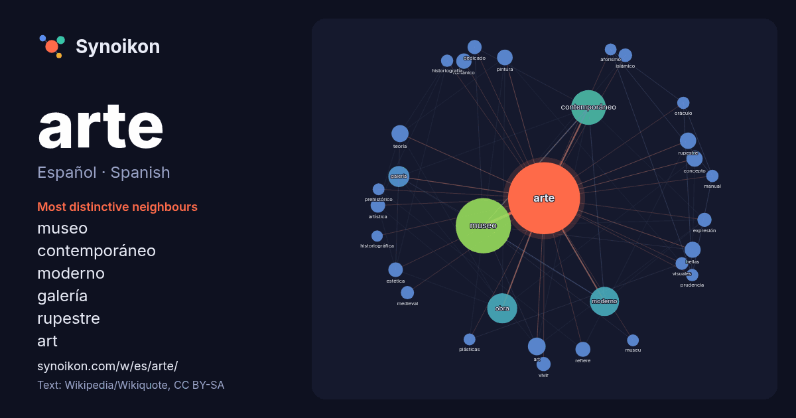

Español · Spanish · popular word
arte
“art” · The words found around it in 1729 instances from Spanish Wikipedia, Wikiquote.

Most distinctive neighbours
- museo 107×
- contemporáneo 90×
- moderno 49×
- galería 30×
- rupestre 23×
- art 21×
- románico 20×
- bellas 18×
- estética 17×
- islámico 15×
- refiere 15×
- teoría 14×
- concepto 14×
- obra 14×
- dedicado 14×
- prudencia 14×
- artística 14×
- oráculo 14×
- vivir 14×
- historiografía 13×
× = how many times more often than in general Spanish Wikipedia text.
Most frequent neighbours
- museo 262
- contemporáneo 103
- obra 77
- moderno 73
- historia 51
- nacional 47
- galería 38
- conocido 33
- centro 29
- art 27
- término 27
- antiguo 25
- teoría 25
- forma 23
- rupestre 23
- bellas 22
- concepto 22
- ciencia 21
- cultura 21
- pintura 21
In context
- El arte (del latín ars, artis, y este calco del griego τέχνη, téchnē) es entendido generalmente como cualquier actividad o producto realizado con una Wikipedia snippets · Arte
- Arte contemporáneo Arte contemporáneo es un término utilizado para describir el arte de hoy. Puede referirse al arte producido desde 1945, desde la mitad Wikipedia snippets · Arte contemporáneo
- genérico véase: Historia del arte. El estudio de la historia del arte es la disciplina académica cuyo objeto son las obras de arte en su desarrollo histórico Wikipedia snippets · Estudio de la historia del arte
- La crítica de arte es el juicio de valor expresado sobre las obras de arte en el ámbito de la estética, pero también en lo que refiere a su relevancia Wikipedia snippets · Crítica de arte
- expresión latina traducible como el arte por la gracia del arte, el arte por el arte mismo o, más comúnmente, el arte por el arte; es un principio de la estética Wikipedia snippets · Arte por el arte
- El arte hispanomusulmán corresponde al arte islámico que se desarrolló en al-Ándalus (la parte musulmana de la península ibérica) entre los siglo VIII Wikipedia snippets · Arte hispanomusulmán
- El arte medieval fue una etapa importante en la historia del arte debido a que impactó la forma de ver el arte. Se enfocó en pinturas bíblicas, un tema Wikipedia snippets · Arte medieval
- La historia del arte es el relato de la evolución del arte a través del tiempo, entendido como cualquier actividad o producto realizado por el ser humano Wikipedia snippets · Historia del arte
More Spanish words
- agua
- bosque
- caballo
- camino
- campana
- canción
- ciencia
- ciudad
- clima
- comida
- corazón
- desierto
- dinero
- dios
- espejo
- estrella
- familia
- fuerza
- gato
- historia
- invierno
- isla
- jardín
- lengua
- lluvia
- madre
- mapa
- miel
- montaña
- muerte
- naturaleza
- oro
- otoño
- pan
- perro
- puente
- reloj
- sal
- salud
- silencio
- sombra
- tiempo
- tormenta
- trabajo
- tren
- té
- verano
- verdad
- vida
Precomputed on 2026-10-09 with default settings (±5 words, medium corpus). The interactive map can refresh it with live data.